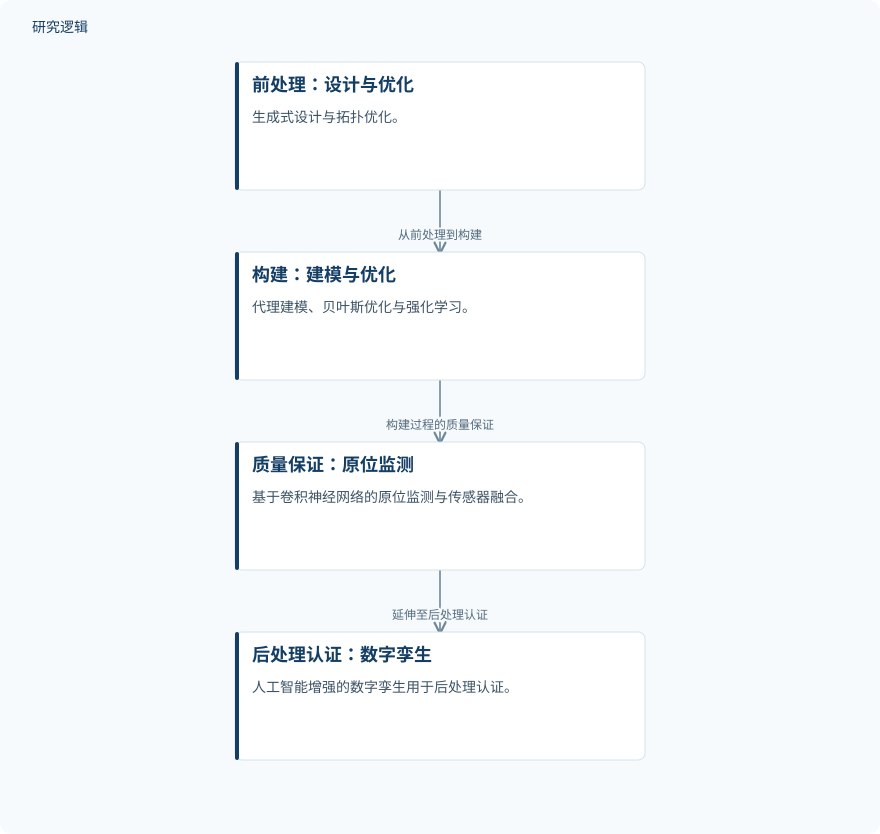

摘要解读
增材制造中的人工智能：方法、应用与工业挑战批判性综述
Artificial Intelligence in Additive Manufacturing: A Critical Review of Methods, Applications and Industrial Challenges
解读更新 2026-10-30 12:23 · 依据公开摘要整理，未核验全文细节
增材制造走向工业生产，难点不仅是打印出零件，更是控制过程波动、识别随机缺陷，并理解工艺如何影响结构与性能。这篇综述沿制造全流程梳理人工智能的应用，也提醒读者关注算法落地所依赖的数据、解释能力与行业标准。
文章目录
从快速原型到生产技术，难在稳定与可知
增材制造已从快速原型工具发展为生产技术，但更广泛的工业应用仍受过程变异和随机缺陷制约。摘要还指出，复杂的工艺—结构—性能（PSP）关系极难仅靠传统实验方法建立映射。这意味着，制造参数与最终性能之间的联系，是理解其工业化障碍的重要切入点。
人工智能与机器学习被用于寻找数据驱动的应对路径，包括参数优化、实时异常检测和缩短开发周期。这里讨论的是技术用途与文献综合，不应将这些概括理解为本文通过统一实验验证的效果。
以批判性综合串联制造全流程
这是一篇批判性综合综述。作者在 Scopus、Web of Science 和 Google Scholar 中开展定向检索，结合增材制造、机器学习、数字孪生、原位监测及具体工艺词汇，覆盖2015至2026年的文献，重点关注2023–2026年的工作。来源选择考虑相关性、方法严谨性及文献时效性。
综述按应用环节组织材料：前处理涉及生成式设计与拓扑优化；构建阶段涉及代理建模、贝叶斯优化与强化学习；质量保证涉及卷积神经网络原位监测和传感器融合；后处理认证则涉及人工智能增强的数字孪生。作者还将文献中的代表性定量结果汇入比较表。
依据摘要整理的增材制造全流程应用示意


按摘要所述制造环节整理人工智能应用；连线表示流程次序，不表示这些技术已集成为经过验证的闭环系统。
下载 SVG图示关系说明
实线表示相邻阶段的信息流，虚线表示跨阶段联系或反馈。
前处理：设计与优化 → 构建：建模与优化：从前处理到构建；构建：建模与优化 → 质量保证：原位监测：构建过程的质量保证；质量保证：原位监测 → 后处理认证：数字孪生：延伸至后处理认证
应用覆盖全链条，工业障碍仍未消失
摘要呈现的核心认识是，人工智能的应用已延伸至设计、构建、监测与认证等环节，但数据稀缺、模型可解释性以及行业统一标准缺失，仍是持续存在的障碍。摘要没有列出比较表的具体数值，因此不能据此排列算法优劣或给出统一的性能提升幅度。
作者将联邦学习、边缘部署推理和可解释人工智能列为近期有前景的研究方向，目标是迈向自主、自纠正的增材制造系统。这是综述的方向性判断，而非此类系统已完成工业验证的证明。
摘要能说明框架，不能替代比较与验证细节
仅凭摘要，无法判断纳入文献数量、具体筛选流程，以及各研究的数据规模、材料与工艺覆盖范围；也无法核对比较对象、评价指标是否一致，或验证是否跨设备、跨场景开展。这些属于当前资料的信息边界，不意味着论文没有开展相关讨论。
阅读启发：沿设计与监测两端追问证据
阅读启发：关注生成式设计的读者，可进一步查阅综述如何联系前处理设计与后续制造质量；关注智能运维的读者，可追问原位异常识别与数字孪生认证分别获得了何种验证。阅读时宜区分环节内的算法表现与全流程自主纠正能力，避免把应用覆盖面等同于系统成熟度。
以上为本站阅读启发与建议，不是论文已验证的结论。